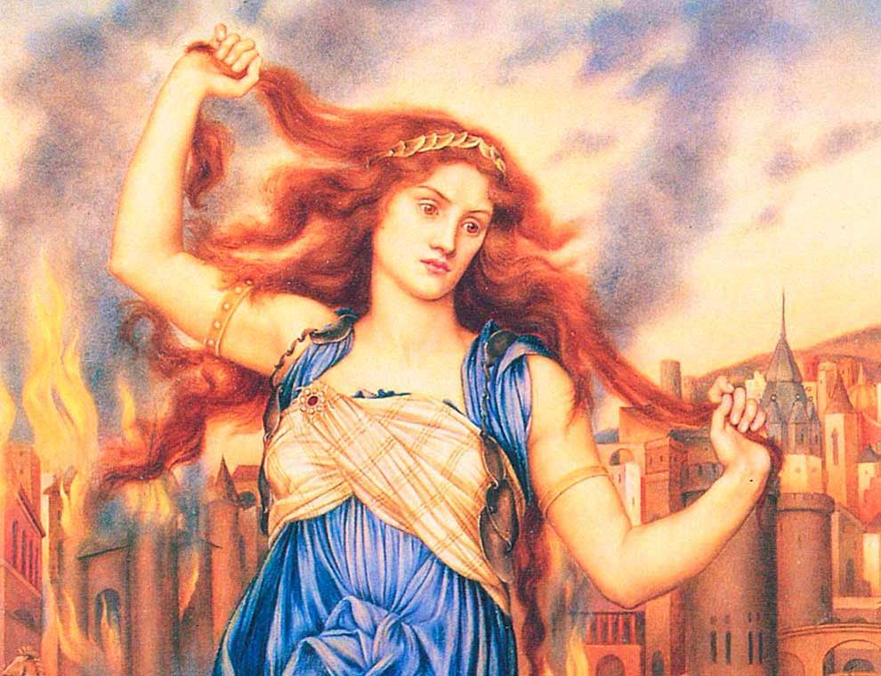
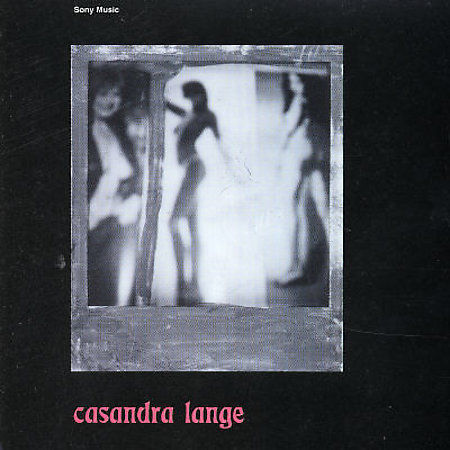
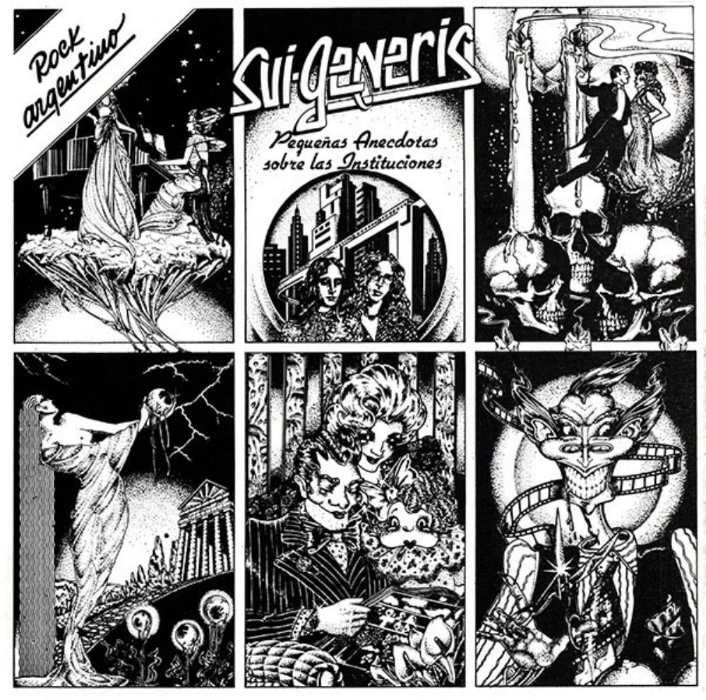
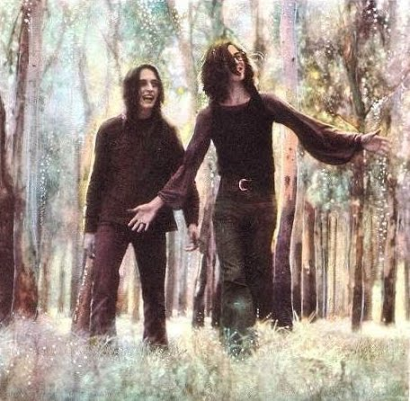
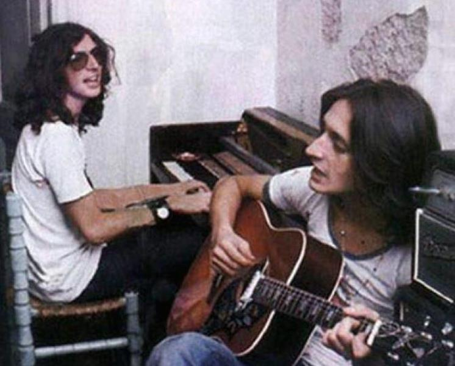
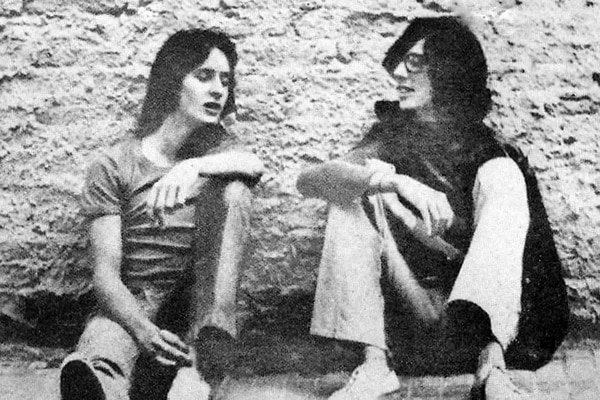
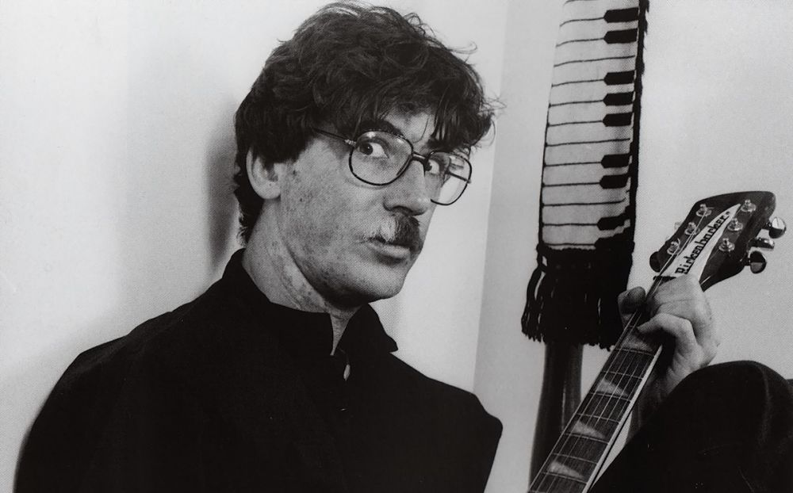

Nuestra historia
Las imágenes se agolpan y podemos imaginar que hubo un año cero, 2003. Siempre se pensó en una casa con distintos matices, pero una casa. La Casa de Casandra, la Casandra del mito, sí pero aderezada, remozada, remasterizada con la de Charly García.
 “Charly me reveló el concepto de Casandra Lange –dice Sergio Marchi.- Hizo alusión al mito de Casandra, pero muy por encima (…) Le interesó más hablar de una vieja canción suya llamada “el tuerto y los ciegos”, de Sui Generis, en donde se menciona a Casandra. El año 1974 era una época de cegueras varias, de oscuridades próximas y Charly ya se perfilaba como un rey tuerto.
“(...) El problema para la Casandra griega era que nadie creía en su capacidad para ver el futuro. En el caso de Lange, ni siquiera creyeron en su probable existencia. Sólo Charly estaba dispuesto a creer y el concepto era una manera de invocar su presencia (…) El concepto y el grupo surgen después de su 2º internación “
Charly por supuesto nos ha seguido inspirando cuando dice que la internación en la clínica psiquiátrica lo hizo sufrir y hasta tuvo miedo de "quedar un poco lisiado del corazón", "es muy rara la industria de la recuperación".
"Tiene muchas fallas y el que sufre realmente es el paciente. Yo la pasé muy mal. A veces los tratamientos, si es que existen, encierran a 20 personas para darle pastillas y sedarlos. Y eso te va reduciendo a una planta".
“Se pasaron meses evaluando si era neurótico, esquizofrénico, psicótico, personalidad dual o qué sé yo. Y cada grupo de médicos me daba o me sacaba pastillas. Y me hicieron muy mal…". Él quizá puede decir, se anima a decir lo que otros no.
Charly convirtió a Casandra en un concepto musical y un alter ego. Para nosotros es una caja de herramientas que hicimos nuestra y su chispa prendió en nuestra casa.
Con todo esto discutido, y las palabras escritas el 1º de octubre de 2003 formamos la Asociación Civil Casandra. A fin de año ya estábamos convocando para formar parte y se acercaron casi una treintena de jóvenes, muchos psicólogos o estudiantes de psicología, algunos de trabajo social y artistas.
El 2005 hubo un acontecimiento importante: la casa recibió a los que venían buscando acogida: la casa de Casandra estaba en marcha, con el Centro de Día con sus puertas abiertas a los primeros aparecedores que nos ayudaron a entender qué queríamos hacer y lo hicimos todos juntos.
En el 2006 iniciamos un programa de formación y siete personas ingresaron a trabajar con nosotros y varias de ellas son parte hoy de Casandra. Se sumaron después otras que venían de profesiones requeridas por la dirección de discapacidad pero que se hicieron parte de una propuesta de trabajo entre varios, libre circulación, creatividad, buen humor, preocupación para que el espacio se vaya construyendo entre todos y somos los que conformamos este lugar: la casa de Casandra.
La labor que se fue haciendo artesanalmente día a día, en la cotidianeidad del trabajo entre varios, los varios que bregamos y sostenemos este espacio como casa, desde el saludo de cada quien que regresa de su hogar y comenta cómo está, algo importante que le pasó o que dejó pasar, hasta la mesa compartida, el mate o la despedida.
En esto ha cobrado importancia lo que denominamos la función acompañante, que surge a cada instante, con cada quien, sin pautas establecidas por estos varios que componen la casa y es así que van surgiendo caminatas, espacios más personales, juegos, cantos, bicicleteadas, fiestas, comidas, talleres, etc.
Es un esfuerzo grande el que hace cada uno de los asistentes para poder salirse de la grilla de discapacitado y mostrar lo que quiere y puede hacer. Ese es y será un logro muy importante para todos. En eso estamos abocados una vez que todos hicimos propia a la casa y a las ganas.
En todo esto es importante que la familia nos acompañe, que pueda sacarse también el rótulo de padres o hermanos de discapacitada/o y se sume a que logren proyectos propios, aunque sean chiquitos con la libertad necesaria que implica la toma de decisiones.
Lacasadecasandra fue desde el comienzo un espacio de resistencia, compartido, las experiencias son múltiples y enriquecedoras, para todos. Se trata de inventar, crear en lo cotidiano.